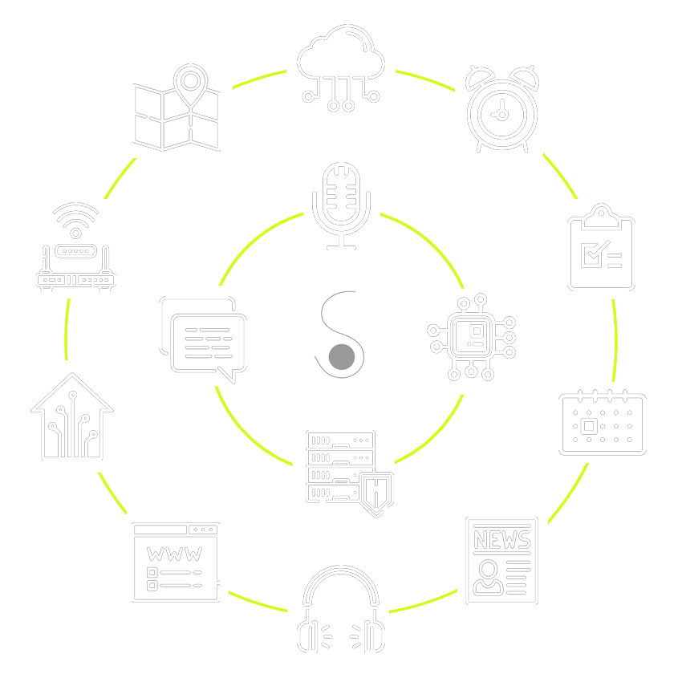

The "A" in SEPIA stands for assistant and that is what it claims to be, you know like Apple's Siri, Amazon's Alexa or Microsoft's Cortana, just a very special, private, customizable version that really belongs to you! In fact SEPIA is not only a ready-to-use, cross-platform app for iOS, Android and desktop browsers but also a whole open-source framework for DIY AI assistants. You want to build your own smart-speaker or home-assistant or you simply want to use a virtual assistant that respects your privacy? Then you found the right place to start :-)
Welcome
S.E.P.I.A.
Your own digital voice-assistant
keyboard_arrow_down
What is SEPIA?
You control your data
Backbone of the SEPIA framework is your own, secure web-server and cloud-service. It runs all the core-modules like the Elasticsearch database, the user-account management, the natural-language-understanding (NLU) and the chat-module. Additionally it connects the NLU to smart-services like reminders, to-do lists, news, IoT interfaces and many more. Thanks to Java the SEPIA back-end runs on basically any OS (Linux, Windows or Mac). It is optimized for single-board computers like the Raspberry Pi but can also be scaled up and hosted on multiple servers in larger networks. All your data is kept safe inside your own environment.

You shape your assistant
SEPIA is extendable and can be improved and individualized in many ways. You can create your own commands on-the-fly and teach SEPIA new stuff using the app (iOS, Android or browser) or you can build complex, voice-controlled smart-services with the Java SDK. Everything from a simple answer to a multi-step dialog with cloud-service integration is possible. If that's still not enough feel free to dive deeper into the code and replace certain modules or rebuild SEPIA completely. Every part of the framework is open-source, free and everybody can contribute.
Do private stuff
Since you control the data and shape your assistant SEPIA's services and answers can use your personal profile to give you individual results without this strange feeling in your stomach that you might get when you don't know who else is reading your messages or collecting information about you. Connect your own IoT devices to SEPIA and keep all the controls protected in your own environment or use a third-party service like Google Maps but share only an anonymous address without any context so Google will never know if you are driving to your grandma or your girlfriend/boyfriend.
Natural dialog and smart actions
SEPIA is designed to understand requests spoken (or typed) in natural language, extract as much information as possible and combine it in an intelligent way with an ever growing number of useful services. If a service is missing some parameters to fulfil the request SEPIA can start a multi-step conversation and ask you questions to fill the gaps. On top of that SEPIA will try to show you relevant information depending for example on the time of the day or your personal preferences.